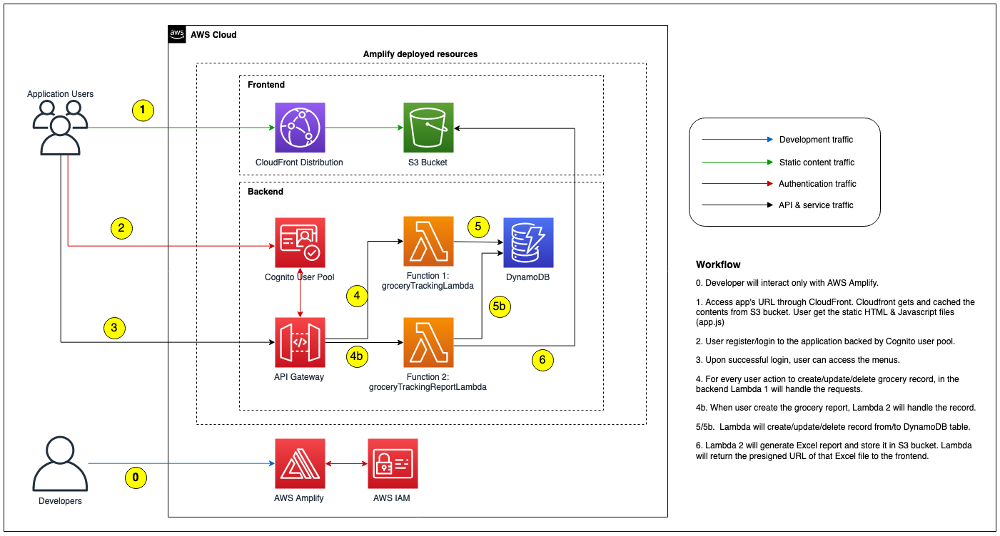
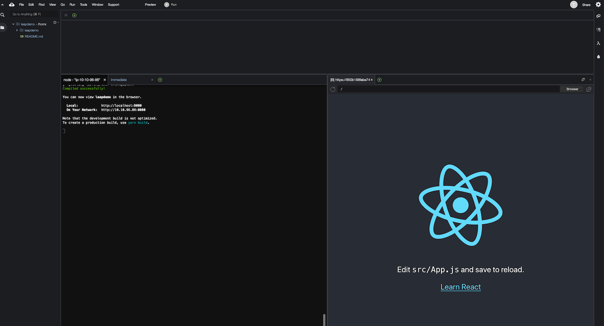
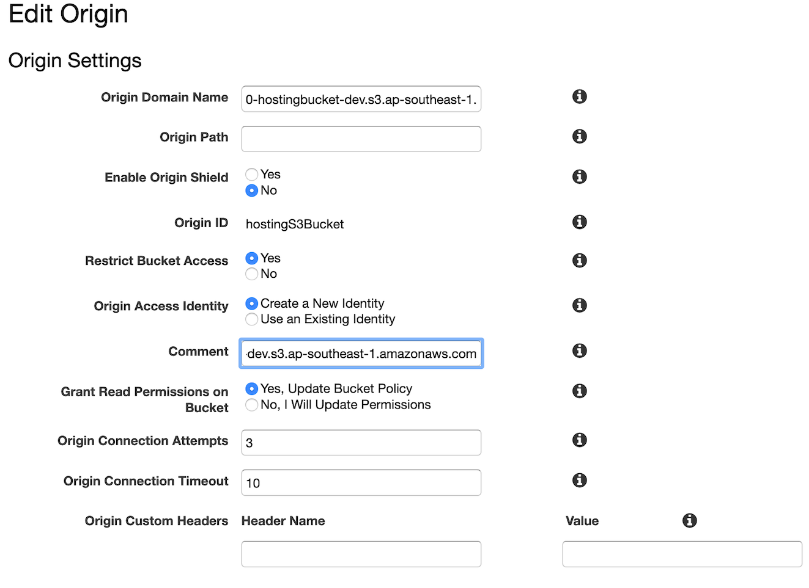
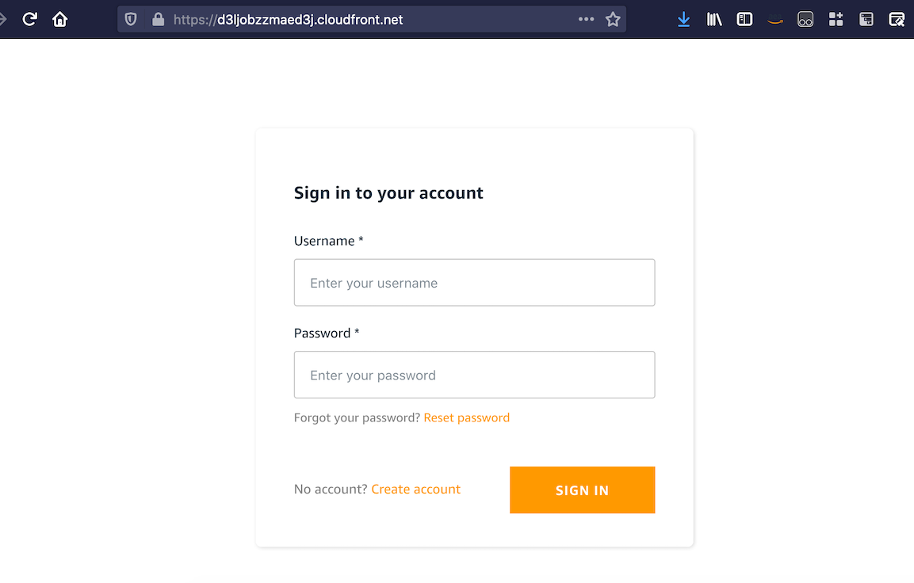

Leap Day: Intro to AWS Amplify
What we will build?
We will build the application that looks like the following diagram:

Details as follow:
- Simple CRUD application to track grocery item (demo of the application can be seen here)
- CRUD = Create Read Update Delete
- We will build both Frontend and Backend using AWS Amplify
- Frontend : React JS (with Amplify library)
- Backend : Python Lambda
- The application will use following components:
- DynamoDB
- API Gateway with Lambda as backend functions
- Cognito User Pool
- React JS application
- Hosting in S3 & CloudFront
Prerequisites
-
We will use Cloud9 with Amazon Linux 2 for the development setup. Please note that:
- You need to resize the disk to at least 20GB (Java script node modules will take up some spaces). You can use automated script on Cloud9 user guide to resize the disk on the fly.
-
Validate the following items in your Cloud9
$ npm --version $ npx --version $ yarn --version $ python --version $ pip --version $ pipenv --version $ amplify --versionFor you that don't familiar with command above: -npmshort for node package manager is a tool to install Javascript package. -npxis tool to execute Javascript package. -yarnis similar to npm. We will use yarn for the rest of the workshop, feel free to use npm if you more familiar with it. -pipis Python package manager to install required modules. -pipenvis Python tool to create isolated environment & manage required packages inside it. We will use this when creating Lambda function. -
On default Cloud9 installation you should have
npm,npx,python, andpip(at the time of this writting, Amazon Linux 2 use Python 3.7.9 as default). And it is ok if you find error foryarn,pipenv, andamplify. On the next few steps we will configure those items. -
You can skip this step if you already have
yarnon your environment. Install YARN package manager$ npm install yarn -g $ yarn —version -
At this time of this writting, Amplify requires Python 3.8 when we use Python for Lambda as backend. On Amazon Linux 2, Python 3.8 is available in Amazon Linux Extra. Run the following command to install Python 3.8.
$ sudo yum update -y $ amazon-linux-extras list | grep -i python $ sudo amazon-linux-extras install python3.8 -y $ sudo alternatives --install /usr/bin/python3 python3 /usr/bin/python3.8 1 $ sudo alternatives --config python3 $ python3 --version
-
We need to install
pipenvto create package dependencies list (Pipfile) for Lambda Python.$ python3 -m pip install --user pipenv -
Last but not least, we need to install Amplify CLI using the following command:
$ npm install -g @aws-amplify/cliWe will use Amplify CLI to create, configure and provision all AWS resources.
-
Download the file below and extract:
$ wget https://staticweb.awsbuilder.xyz/leapdemo-introamplify-workshop.tar.gz $ tar zxvf leapdemo-introamplify-workshop.tar.gzYou should see 4 files below, we will use those files later in the installation steps:
- groceryTrackingLambda.tar.gz
- groceryTrackingReportLambda.tar.gz
- react-app.tar.gz
- index.html
Installation
-
First we will create a basic React App. We create a folder as project folder and run
npx create-react-appas shown below:$ mkdir leapdemo $ cd leapdemo $ npx create-react-app .On the example above, we use
leapdemofolder as top level project. You can use different project folder name. -
We can test basic React website locally using the following command:
$ yarn startBy default
yarnwill create local web server using port 8080. -
You can check the output using Preview button on the Cloud9 top navbar, you should see the output similar like this:

Alternatively you can test from your local browser after you add the required port in Cloud9's security group setting.
-
Lets inspect the working directory, you should have the following contents :
$ ls -trl total 548 drwxrwxr-x 2 ec2-user ec2-user 4096 Dec 4 15:20 src -rw-r--r-- 1 ec2-user ec2-user 3362 Dec 4 15:20 README.md drwxrwxr-x 2 ec2-user ec2-user 4096 Dec 4 15:20 public -rw-rw-r-- 1 ec2-user ec2-user 812 Dec 4 15:20 package.json -rw-rw-r-- 1 ec2-user ec2-user 503731 Dec 4 15:20 yarn.lock drwxrwxr-x 1048 ec2-user ec2-user 36864 Dec 4 15:22 node_modules $srcfolder is the placeholder for our React source codes.package.jsoncontains all Javascript package dependencies and some command to build & run this React application.publicis the folder that will be accessed by web user, containsindex.html& Javascript for React application.
-
Now lets setup Amplify by initialize the environment using command below (still on top level project directory):
$ amplify initAmplify will as you to provide some information below :
``` ? Enter a name for the project # Your project name (e.g. leapdemo) ? Enter a name for the environment # Your environment type (e.g. dev /prod) ? Choose your default editor: # Your prefered editor (e.g. Visual Code Editor, this is optional) ? Choose the type of app that you're building # Select javascript Please tell us about your project ? What javascript framework are you using # Select react ? Source Directory Path: src # leave default value ? Distribution Directory Path: build # leave default value ? Build Command: npm run-script build # leave default value ? Start Command: npm run-script start # leave default value Using default provider awscloudformation # leave default value AWS access credentials can not be found. # ? Setup new user Yes # Select Yes if you want to create new IAM user Follow these steps to set up access to your AWS account:
Sign in to your AWS administrator account: https://console.aws.amazon.com/ Press Enter to continue
Specify the AWS Region ? region: # Specify AWS region Specify the username of the new IAM user: ? user name: # Specify IAM User Complete the user creation using the AWS console https://console.aws.amazon.com/iam/home?region=ap-southeast-1#/users$new?step=final&accessKey&userNames=amplify-leapdemo&permissionType=policies&policies=arn:aws:iam::aws:policy%2FAdministratorAccess Press Enter to continue
Enter the access key of the newly created user: ? accessKeyId: **** # Input your access key id ? secretAccessKey: ******** # Input your secret access key This would update/create the AWS Profile in your local machine ? Profile Name: # leave default or input AWS profile name if you have existing AWS profile in your Cloud9
Successfully set up the new user.
For more information on AWS Profiles, see: https://docs.aws.amazon.com/cli/latest/userguide/cli-configure-profiles.html
? Do you want to use an AWS profile? # Select Yes to use profile ? Please choose the profile you want to use # Select AWS Profile name ```
After all those questionaire, Amplify will start to initialize a new Amplify environment in the backend.
Please note that IAM user creation is optional step, you can rather use existing IAM and/or existing AWS profile. Default user created from this console will be using
AdministratorAccesspolicy. -
We can validate the status of Amplify using
amplify statuscommand. At the moment you should see empty Resource name. -
Next we will create Cognito user pool for handling our application user authentication. Run the following command to start adding & configuring Cognito:
$ amplify add authBy default Amplify will use Cognito as provider as mentioned in the initial message:
``` Using service: Cognito, provided by: awscloudformation
The current configured provider is Amazon Cognito. ```
Amplify will ask few configuration below:
Do you want to use the default authentication and security configuration? # Choose "Default configuration" How do you want users to be able to sign in? # Choose "Username" Do you want to configure advanced settings? # Choose "No, I am done."Notes : 1. That you can choose different setup if you already comfortable with Cognito settings. 2. To navigate through Amplify resource creation wizard, you can use : - up/down arrow buttons - 'space' button to select 1 option - 'a' button to select all options - 'i' button to invert the selection - 'Enter' button to continue
-
Next we need to create S3 bucket as the storage media using the following command:
amplify add storageAmplify will ask few configuration below:
? Please select from one of the below mentioned services: # Select "Content (Images, audio, video, etc.)" ? Please provide a friendly name for your resource that will be used to label this category in the project: # Specify resource name, e.g. grocerybucket ? Please provide bucket name: # Specify S3 bucket name (must be unique), e.g. grocerybucket123 ? Who should have access: # Select "Auth users only" ? What kind of access do you want for Authenticated users? # Select "create/update, read, delete" ? Do you want to add a Lambda Trigger for your S3 Bucket? # Select "No" -
Next we need to prepare DynamoDB table. Please note that for this step you must follow the instruction below closely (using the same column name, column type, as well as Primary/Sort Key setup) since the Lambda function already set using those values.
``` $ amplify add storage ? Please select from one of the below mentioned services: # Select "NoSQL Database"
Welcome to the NoSQL DynamoDB database wizard This wizard asks you a series of questions to help determine how to set up your NoSQL database table.
? Please provide a friendly name for your resource that will be used to label this category in the project: # Specify Amplify resource name, e.g. "groceryTable" ? Please provide table name: # Specify Amplify resource name, e.g. "groceryTable"
You can now add columns to the table.
? What would you like to name this column: PK ? Please choose the data type: string ? Would you like to add another column? Yes ? What would you like to name this column: SK ? Please choose the data type: string ? Would you like to add another column? Yes ? What would you like to name this column: username ? Please choose the data type: string ? Would you like to add another column? Yes ? What would you like to name this column: grocery_id ? Please choose the data type: string ? Would you like to add another column? Yes ? What would you like to name this column: grocery_date ? Please choose the data type: string ? Would you like to add another column? Yes ? What would you like to name this column: grocery_budget ? Please choose the data type: string ? Would you like to add another column? Yes ? What would you like to name this column: grocery_name ? Please choose the data type: string ? Would you like to add another column? Yes ? What would you like to name this column: grocery_cost ? Please choose the data type: string ? Would you like to add another column? Yes ? What would you like to name this column: grocery_qty ? Please choose the data type: string ? Would you like to add another column? No
? Please choose partition key for the table: PK ? Do you want to add a sort key to your table? Yes ? Please choose sort key for the table: SK
? Do you want to add global secondary indexes to your table? No ? Do you want to add a Lambda Trigger for your Table? No Successfully added resource groceryTable locally ```
-
The next step is to create API Gateway (REST) with Lambda functions as backend:
``` $ amplify add api ? Please select from one of the below mentioned services: # Select "REST" ? Provide a friendly name for your resource to be used as a label for this category in the project: # Specify API name, e.g. "groceryTrackingAPI" ? Provide a path (e.g., /book/{isbn}): # Specify 1st path name for CRUD operation, e.g. "/grocery" ? Choose a Lambda source # Select "Create a new Lambda function" ? Provide an AWS Lambda function name: # Specify Lambda name, e.g. "groceryTrackingLambda" ? Choose the runtime that you want to use: # Select "Python" ? Do you want to configure advanced settings? # Select "Yes" ? Do you want to access other resources in this project from your Lambda function? # Select "Yes" ? Select the category # Select "storage" ? Storage has 2 resources in this project. Select the one you would like your Lambda to access # Select both DynamoDB table & S3 Bucket name, e.g. "groceryBucket, groceryTable" ? Select the operations you want to permit for groceryBucket # Select "create, read, update, delete" ? Select the operations you want to permit for groceryTable # Select "create, read, update, delete"
Note the output of these environment variables name
You can access the following resource attributes as environment variables from your Lambda function ENV REGION STORAGE_GROCERYBUCKET_BUCKETNAME STORAGE_GROCERYTABLE_ARN STORAGE_GROCERYTABLE_NAME
? Do you want to invoke this function on a recurring schedule? # Select "No" ? Do you want to configure Lambda layers for this function? # Select "No" ? Do you want to edit the local lambda function now? # Select "No" ? Restrict API access # Select "Yes" ? Who should have access? # Select "Authenticated users only" ? What kind of access do you want for Authenticated users? # Select "create, read, update, delete" ? Do you want to add another path? # Select "Yes"
? Provide a path (e.g., /book/{isbn}): # Specify 1st path name for reporting function, e.g. "/report" ? Choose a Lambda source # Select "Create a new Lambda function" ? Provide an AWS Lambda function name: # Specify Lambda name, e.g. "groceryTrackingReportLambda" ? Choose the runtime that you want to use: # Select "Python" ? Do you want to configure advanced settings? # Select "Yes" ? Do you want to access other resources in this project from your Lambda function? # Select "Yes" ? Select the category # Select "storage" ? Storage has 2 resources in this project. Select the one you would like your Lambda to access # Select DynamoDB table & S3 Bucket name, e.g. "groceryBucket, groceryTable" ? Select the operations you want to permit for groceryBucket # Select "create, read, update, delete" ? Select the operations you want to permit for groceryTable # Select "create, read, update, delete"
Note the output of these environment variables name
You can access the following resource attributes as environment variables from your Lambda function ENV REGION STORAGE_GROCERYBUCKET_BUCKETNAME STORAGE_GROCERYTABLE_ARN STORAGE_GROCERYTABLE_NAME
? Do you want to invoke this function on a recurring schedule? # Select "No" ? Do you want to configure Lambda layers for this function? # Select "No" ? Do you want to edit the local lambda function now? # Select "No" ? Restrict API access # Select "Yes" ? Who should have access? # Select "Authenticated users only" ? What kind of access do you want for Authenticated users? # Select "create, read, update, delete" ? Do you want to add another path? # Select "No" ```
-
We need to prepare React environment variables based on the values we used on previous steps. On the top project folder, create
.envfile and add the following parameters:REACT_APP_API_NAME=groceryTrackingAPI REACT_APP_API_PATH=/grocery REACT_APP_API_PATH_REPORT=/report -
Now we can copy all the source codes (Python for Lambda function and all React apps) from the zip files provided earlier:
-
Go to 1st Lambda function folder under
<PROJECT_FOLDER>/amplify/backend/function/<FUNCTION_1>/srcand extractgroceryTrackingLambda.tar.gz(in this sample it isleapdemo/amplify/backend/function/groceryTrackingLambda/src), you should see the following files:- createItem.py
- deleteItem.py
- getItem.py
- index.py (overwrite existing index.py)
- updateItem.py
- validateRequest.py
- event.json
-
Go to 2nd Lambda function folder under
<PROJECT_FOLDER>/amplify/backend/function/<FUNCTION_2>/src(in this sample it is leapdemo/amplify/backend/function/groceryTrackingReportLambda/src) and extractgroceryTrackingReportLambda.tar.gz, you should see 2 files below:- createReport.py
- index.py (overwrite existing file)
-
Now go back to the React
srcfolder which located under root project directory and extractreact-app.tar.gz. You should get 15 files below:- alertHelper.js
- App.css (override existing)
- App.js (override existing)
- dateHelper.js
- Header.css
- Header.js
- Home.js
- index.css (override existing)
- index.js (override existing)
- NewGrocery.js
- Report.js
- ShowAll.js
- ShowByDate.js
- ShowDetail.js
- tableHandlerNew.js
-
Go to
publicfolder under root project directory and overwriteindex.htmlusing the file you downloaded earlier.
-
-
Our sample React App requires some Node modules, go to top project directory and install the required modules using the following command:
``` $ yarn add @aws-amplify/ui-react \ query-string \ aws-amplify \ react-bootstrap \ react-datepicker \ react-number-format \ react-router-dom \ styled-components \ uuid; ``` -
Next we to add Python package dependencies for both Lambda function. We will use
pipenvcommand to install and list the required packages:-
First Lambda function (i.e.
groceryTrackingLambda) requiresboto3to interact with other AWS resources (such as DynamoDB), and alsodatetimepackage to manage the timestamp. Go to 1st Lambda function folder under<PROJECT_FOLDER>/amplify/backend/function/<FUNCTION_1>and run the following command:$ pipenv install boto3 datetimeThe
pipenvcommand will install the required packages in isolated Python environment & write the packages name into thePipfilefile. In the same directory (<PROJECT_FOLDER>/amplify/backend/function/<FUNCTION_1>), check thePipfile& verify it already contains both packages like the example below:``` $ cat Pipfile [[source]] name = "pypi" url = "https://pypi.org/simple" verify_ssl = true
[dev-packages]
[packages] boto3 = "" datetime = ""
[requires] python_version = "3.8"
``` -
Second Lambda function (i.e.
groceryTrackingReportLambda) requires few Python packages:boto3: to interact with DynamoDB tabledatetime: to handle timestamp & date formattingpandas&numpy: to build the data set in Excel format.xlsxwriter: to produce Excel report file.
Go to 2nd Lambda function folder under
<PROJECT_FOLDER>/amplify/backend/function/<FUNCTION_2>and and run the following command:$ pipenv install boto3 datetime numpy pandas xlsxwriterSame as previous step, check the
Pipfilefile & verify it already contains all packages like the example below:``` $ cat Pipfile [[source]] name = "pypi" url = "https://pypi.org/simple" verify_ssl = true
[dev-packages]
[packages] numpy = "" pandas = "" xlsxwriter = "" boto3 = "" datetime = "*"
[requires] python_version = "3.8"
``` 15. Up until this point all configuration of backend components still not pushed to the cloud. You should see similar output below:
``` $ amplify status
Current Environment: dev
Category Resource name Operation Provider plugin Auth leapdemo8ff38349 Create awscloudformation Storage groceryBucket Create awscloudformation Storage groceryTable Create awscloudformation Function groceryTrackingLambda Create awscloudformation Function grocertyTrackingReportLambda Create awscloudformation Api groceryTrackingAPI Create awscloudformation $ ```
-
-
Now we can push the configuration, Amplify will start provision all of the backend resources using bunch of CloudFormation scripts.
$ amplify push -yThis process will take some time to complete (15-25minutes). In the end if all resources has been provisioned successfully, you should see the output like this:``` ✔ All resources are updated in the cloud
REST API endpoint: https://br1670h4e4.execute-api.ap-southeast-1.amazonaws.com/dev
$ ```
We can double check the status using
amplify statuscommand. -
Now we can continue build and publish the frontend component (i.e. publish React app). Amplify provides 2 method to host our React app:
a. Hosting with Amplify Console b. CloudFront & S3
In this workshop we will use CloudFront and S3. To configure the hosting, run the following command:
``` $ amplify add hosting ? Select the plugin module to execute # Select Amazon CloudFront and S3 ? Select the environment setup: # Select PROD (S3 with CloudFront using HTTPS) ? hosting bucket name # leave default value for bucket name
Static webhosting is disabled for the hosting bucket when CloudFront Distribution is enabled.
You can now publish your app using the following command: Command: amplify publish
$ ```
-
Execute
amplify publishto continue setup S3 & CloudFront. What happen next is Amplify will do the following:- Create new S3 bucket for application hosting
- Create a new CloudFront distribution with S3 as backend.
- On the CloudFront distribution, a new Origin Access Identity (OAI) will be created to restrict access directly to S3 bucket. A corresponding S3 bucket policy also configured to allow the new OAI.
- Amplify will make sure all configured resources already push and provisioned in the cloud.
- Amplify will build React source code (execute
react-scripts builddescribed inpackage.jsonfile) and upload the artifact to the S3 bucket.
At the end of the process, you will see the notification like the sample below:
Your app is published successfully. https://d3ljobzzmaed3j.cloudfront.net -
Once caveat if we use region other than
us-east-1is CloudFront falsely redirect the request to S3 bucket like the following example.``` $ curl -I https://d3ljobzzmaed3j.cloudfront.net HTTP/2 307 content-type: application/xml location: https://leapdemo-20210115111810-hostingbucket-dev.s3-ap-southeast-1.amazonaws.com/index.html x-amz-bucket-region: ap-southeast-1 date: Fri, 15 Jan 2021 11:28:18 GMT server: AmazonS3 x-cache: Miss from cloudfront via: 1.1 f28347a3148f4f8fa1d930375689073d.cloudfront.net (CloudFront) x-amz-cf-pop: SIN5-C1 x-amz-cf-id: 6UNRO-nJlIQcIMp1xz0b_Kv-dVQb9Mn3yvRepLlk1IMqx7HHJfjoZA==
$ ```
This behaviour occur because delay on DNS propagation of our our newly created S3 bucket. It will not be an issue if we configure our Amplify in
us-east-1. You can wait until the propagation completed or as the workaround we can modify CloudFront origin to point to regional name of S3 bucket as shown below:- Before:
.s3.amazonaws.com - After:
.s3. .amazonaws.com
Don't forget to recreate OAI & update S3 bucket policy when we change the origin name as shown in the following screenshot:

- Before:
-
After CloudFront configuration updated, you can test visiting its domain name once again.

-
You can test the application by signing up first.
Known Issue
We acknowledge the issue with Excel report generation if you are using Python 3.8.5. When we push the environment, Amplify only compiled 3 packages (boto3, datetime, and xlsxwriter). That makes Lambda report function generate the following error:
[ERROR] Runtime.ImportModuleError: Unable to import module 'index': No module named 'pandas'
Upon checking we found that with Python 3.8.5 there is different location of packages, both numpy & pandas now stored inside lib64
:~/.local/share/virtualenvs/groceryTrackingReportLambda-W_sVNa5j $ ll lib64/python3.8/site-packages/
total 8
drwxrwxr-x 17 ec2-user ec2-user 4096 Jan 15 10:56 numpy
drwxrwxr-x 2 ec2-user ec2-user 175 Jan 15 10:56 numpy-1.19.5.dist-info
drwxrwxr-x 2 ec2-user ec2-user 150 Jan 15 10:56 numpy.libs
drwxrwxr-x 15 ec2-user ec2-user 296 Jan 15 10:56 pandas
drwxrwxr-x 2 ec2-user ec2-user 161 Jan 15 10:56 pandas-1.2.0.dist-info
drwxrwxr-x 3 ec2-user ec2-user 23 Jan 15 10:56 zope
-rw-rw-r-- 1 ec2-user ec2-user 529 Jan 15 10:56 zope.interface-5.2.0-py3.8-nspkg.pth
drwxrwxr-x 2 ec2-user ec2-user 136 Jan 15 10:56 zope.interface-5.2.0.dist-info
:~/.local/share/virtualenvs/groceryTrackingReportLambda-W_sVNa5j $
While the other 3 packages are stored in lib folder:
:~/.local/share/virtualenvs/groceryTrackingReportLambda-W_sVNa5j $ ll lib/python3.8/site-packages/
total 76
drwxrwxr-x 4 ec2-user ec2-user 156 Jan 15 10:56 DateTime
drwxrwxr-x 2 ec2-user ec2-user 148 Jan 15 10:56 DateTime-4.3.dist-info
drwxrwxr-x 2 ec2-user ec2-user 123 Jan 15 10:57 XlsxWriter-1.3.7.dist-info
drwxrwxr-x 2 ec2-user ec2-user 32 Jan 15 10:56 __pycache__
drwxrwxr-x 2 ec2-user ec2-user 44 Jan 15 10:56 _distutils_hack
-rw-rw-r-- 1 ec2-user ec2-user 18 Jan 15 10:56 _virtualenv.pth
-rw-rw-r-- 1 ec2-user ec2-user 5662 Jan 15 10:56 _virtualenv.py
drwxrwxr-x 10 ec2-user ec2-user 210 Jan 15 10:56 boto3
drwxrwxr-x 2 ec2-user ec2-user 148 Jan 15 10:56 boto3-1.16.55.dist-info
drwxrwxr-x 7 ec2-user ec2-user 4096 Jan 15 10:56 botocore
drwxrwxr-x 2 ec2-user ec2-user 131 Jan 15 10:56 botocore-1.19.55.dist-info
drwxrwxr-x 6 ec2-user ec2-user 210 Jan 15 10:56 dateutil
-rw-rw-r-- 1 ec2-user ec2-user 152 Jan 15 10:56 distutils-precedence.pth
-rw-rw-r-- 1 ec2-user ec2-user 126 Jan 15 10:56 easy_install.py
drwxrwxr-x 3 ec2-user ec2-user 167 Jan 15 10:56 jmespath
drwxrwxr-x 2 ec2-user ec2-user 150 Jan 15 10:56 jmespath-0.10.0.dist-info
drwxrwxr-x 17 ec2-user ec2-user 4096 Jan 15 13:40 numpy
drwxrwxr-x 2 ec2-user ec2-user 175 Jan 15 13:40 numpy-1.19.5.dist-info
drwxrwxr-x 2 ec2-user ec2-user 150 Jan 15 13:40 numpy.libs
drwxrwxr-x 15 ec2-user ec2-user 296 Jan 15 13:40 pandas
drwxrwxr-x 2 ec2-user ec2-user 161 Jan 15 13:40 pandas-1.2.0.dist-info
drwxrwxr-x 4 ec2-user ec2-user 76 Jan 15 10:56 pip
drwxrwxr-x 2 ec2-user ec2-user 130 Jan 15 10:56 pip-20.3.3.dist-info
-rw-rw-r-- 1 ec2-user ec2-user 0 Jan 15 10:56 pip-20.3.3.virtualenv
drwxrwxr-x 4 ec2-user ec2-user 54 Jan 15 10:56 pkg_resources
drwxrwxr-x 2 ec2-user ec2-user 118 Jan 15 10:56 python_dateutil-2.8.1.dist-info
drwxrwxr-x 4 ec2-user ec2-user 150 Jan 15 10:56 pytz
drwxrwxr-x 2 ec2-user ec2-user 166 Jan 15 10:56 pytz-2020.5.dist-info
drwxrwxr-x 3 ec2-user ec2-user 304 Jan 15 10:56 s3transfer
drwxrwxr-x 2 ec2-user ec2-user 131 Jan 15 10:56 s3transfer-0.3.4.dist-info
drwxrwxr-x 6 ec2-user ec2-user 4096 Jan 15 10:56 setuptools
drwxrwxr-x 2 ec2-user ec2-user 154 Jan 15 10:56 setuptools-51.1.2.dist-info
-rw-rw-r-- 1 ec2-user ec2-user 0 Jan 15 10:56 setuptools-51.1.2.virtualenv
drwxrwxr-x 2 ec2-user ec2-user 102 Jan 15 10:56 six-1.15.0.dist-info
-rw-rw-r-- 1 ec2-user ec2-user 34159 Jan 15 10:56 six.py
drwxrwxr-x 6 ec2-user ec2-user 291 Jan 15 10:56 urllib3
drwxrwxr-x 2 ec2-user ec2-user 106 Jan 15 10:56 urllib3-1.26.2.dist-info
drwxrwxr-x 4 ec2-user ec2-user 190 Jan 15 10:56 wheel
drwxrwxr-x 2 ec2-user ec2-user 130 Jan 15 10:56 wheel-0.36.2.dist-info
-rw-rw-r-- 1 ec2-user ec2-user 0 Jan 15 10:56 wheel-0.36.2.virtualenv
drwxrwxr-x 3 ec2-user ec2-user 4096 Jan 15 10:57 xlsxwriter
drwxrwxr-x 3 ec2-user ec2-user 23 Jan 15 13:40 zope
-rw-rw-r-- 1 ec2-user ec2-user 529 Jan 15 13:40 zope.interface-5.2.0-py3.8-nspkg.pth
drwxrwxr-x 2 ec2-user ec2-user 136 Jan 15 13:40 zope.interface-5.2.0.dist-info
:~/.local/share/virtualenvs/groceryTrackingReportLambda-W_sVNa5j $
This is different behavior with Python 3.8.1 on which all packages stored in the same lib directory.
As the workaround, we can manually copied both numpy & pandas from lib64 to lib folder. Steps are:
$ cp -r ~/.local/share/virtualenvs/groceryTrackingReportLambda*/lib64/python3.8/site-packages/numpy* ~/.local/share/virtualenvs/groceryTrackingReportLambda*/lib/python3.8/site-packages/
$ cp -r ~/.local/share/virtualenvs/groceryTrackingReportLambda*/lib64/python3.8/site-packages/pandas* ~/.local/share/virtualenvs/groceryTrackingReportLambda*/lib/python3.8/site-packages/
$ cd <PROJECT_FOLDER>/amplify/backend/function/<FUNCTION_2>
$ touch dummy.txt ## this is to trick Amplify that there is actual function changes, otherwise it won't let us to run amplify push again.
$ amplify push -y